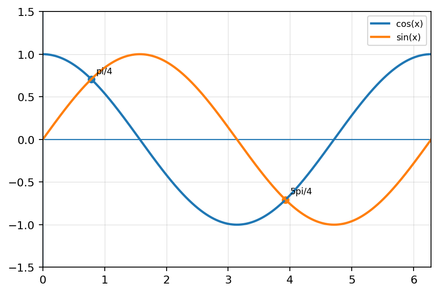
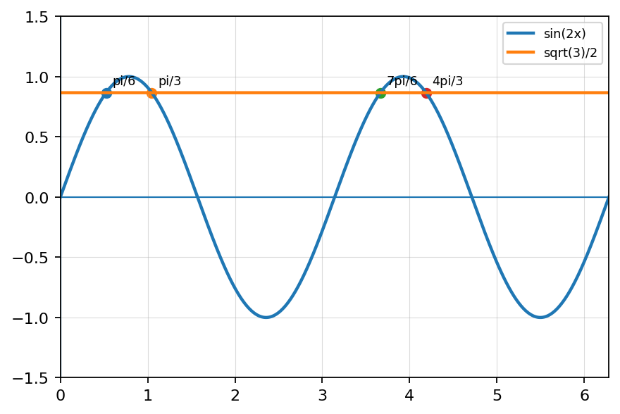
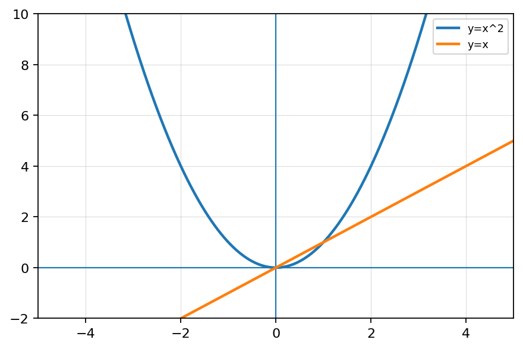
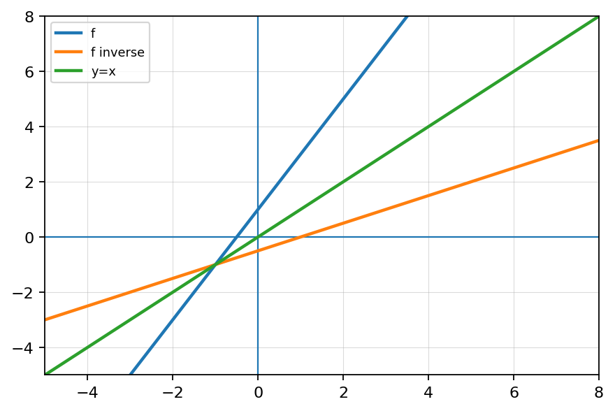
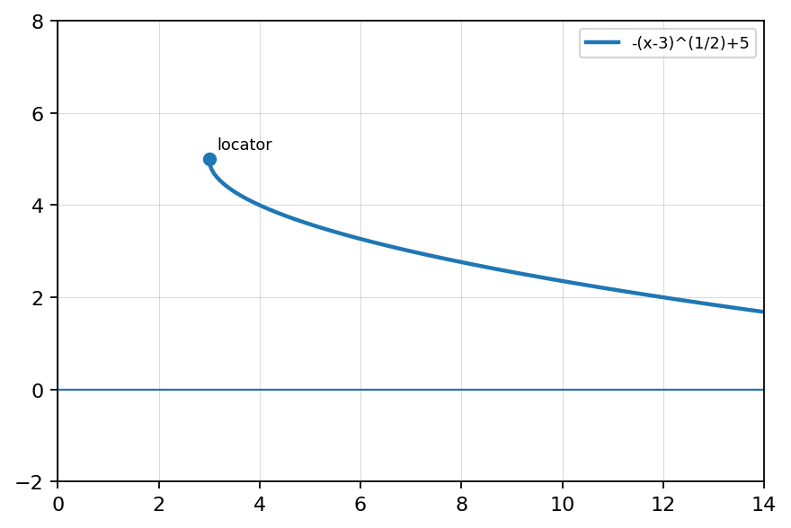
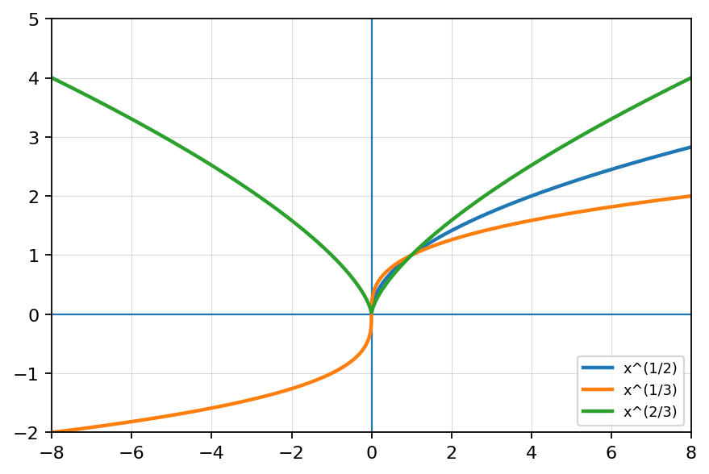
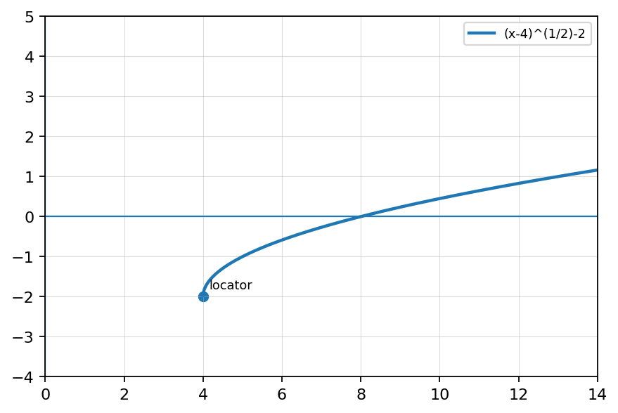

State all angles where $\tan(x)$ is undefined on $0\le x<2\pi$.
Use the graph to solve $\cos(x)=\sin(x)$.

Use identities to solve $2\sin(x)\cos(x)=1$.
Solve $\sin(2x)=\frac{\sqrt3}{2}$ on $0\le x<2\pi$. Explain why doubling the angle changes the number of solutions and compare to solving $\sin(x)=\frac{\sqrt3}{2}$.

State whether each function is one-to-one.
Use the horizontal line test to decide whether each graph has an inverse that is a function.

Find the inverse of \(f(x)=\frac{x-7}{2}\).
Find the inverse of \(f(x)=\frac{5x+1}{3}\).
A function has domain \([-2,5]\) and range \([1,8]\). What are the domain and range of its inverse?
Let \(f(x)=(x+4)^2-1\).
A graph is reflected across \(y=x\). Explain how:

Create a multi-representation inverse problem involving an equation, table, and graph.
State whether each function has a domain of all real numbers or a restricted domain.
Analyze \(f(x)=-(x-3)^{1/2}+5\). State domain, range, locator point, intercepts, and interval of increase/decrease.

Use graphs of \(y=x^{1/2}\), \(y=x^{1/3}\), and \(y=x^{2/3}\). Compare their domains, ranges, intercepts, and symmetry.

Create a multi-representation problem involving an equation with a rational exponent, a table, and a graph. Students must identify domain, range, intercepts, and intervals of increase/decrease.
